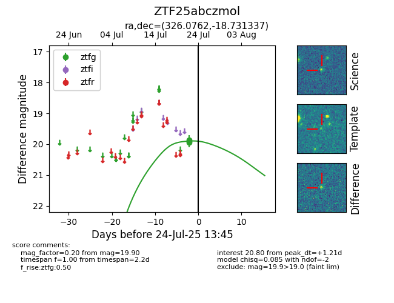

Target ZTF25abczmol at 2025-07-24 13:45, see:
FINK: fink-portal.org/ZTF25abczmol
Lasair: lasair-ztf.lsst.ac.uk/objects/ZTF25abczmol
ALeRCE: alerce.online/object/ZTF25abczmol
alt names
ZTF25abczmol (ztf,fink)
coordinates:
equatorial (ra, dec) = (326.0762,-18.73134)
galactic (l, b) = (33.7536,-46.35083)
photometry
last ztfg=19.90
3 ztfg detections
